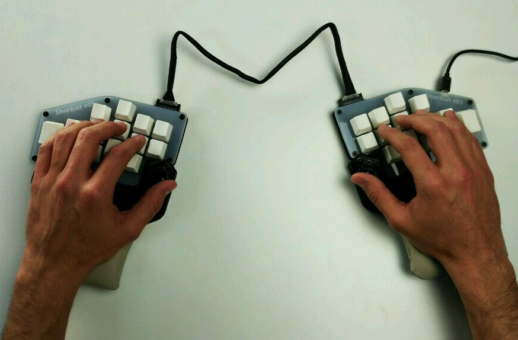
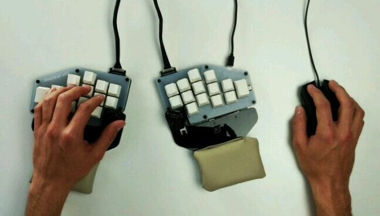

This is the first of a series of posts where we’explain the decisions behind the Shortcut’s ergonomic design.
In the Shortcut design we have considered the ergonomy as one of the main product features. After reading this post you will know a little more about what what we’ve done and why.
A little history: evolution, hand and tools
In the early origins of our species, two different things helped us to massively increase our hand’s ability:
Our hands are a very special part of the body, and one of the most important parts of the hand is the thumb. It is able to turn back against the other fingers, allowing us to grab things strongly, but also to manipulate objects with extra precision. It has became so specialized we can use it to manipulate things better than any other species did before.
With these new wonderful manual abilities we started using more objects. We developed tools that we carried with us to help in our daily tasks. Those tools became more and more sophisticated, allowing us to do new things, as well as old things more easily. We’ve never stopped improving our tools, but we believe there’s still lot of work to do with our modern tools.
Modern work tools
A good definition of ergonomy is: the science of refining the design of products to optimize them for human use.
The Shortcut development team has applied this science to improve our product in order to increase user performance, comfort and reduce future injuries. We believe that we should adapt our workspace to us, not adapt us to our workspace.
Nowadays, the most used tool is the computer. We use it for work, entertainment, learning and more. We spend a lot of hours at the desktop and our body isn’t designed for it. This situation is causing lots of discomfort for users, with some new injuries appearing. With the rise of gaming, many younger users are suffering what are traditionally an older person’s injuries. The Shortcut development team strongly believes new and better tools can help us to solve this problem.
Shortcut design
Our objective in the Shortcut project is to fix main problems we have found in traditional keyboards. There are some points we can improve just by thinking about design from an ergonomic point of view:


In our next posts we will further explain these points, explaining the science behind our design decisions.